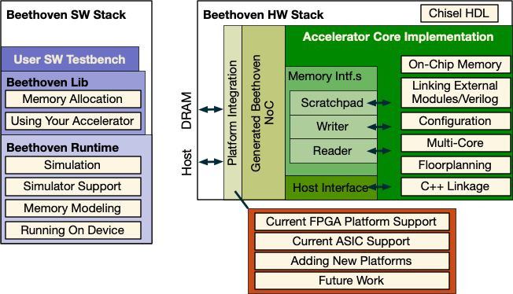

<map name="GraffleExport">
	<area shape=rect coords="184,291,356,313" href="/Beethoven/Platform/Kria">
	<area shape=rect coords="509,184,648,206" href="/Beethoven/HW/#platforms">
	<area shape=rect coords="509,68,648,90" href="Beethoven/HW/#configuration--build">
	<area shape=rect coords="6,291,179,313" href="/Beethoven/Platform/AWSF">
	<area shape=rect coords="509,218,648,240" href="https://www.chisel-lang.org">
	<area shape=rect coords="370,272,618,294" href="/Beethoven/Platforms/NewPlatform">
	<area shape=poly coords="306,254,306,31,284,31,284,254,306,254" href="/Beethoven/HW/#platforms">
	<area shape=rect coords="509,131,648,170" href="/Beethoven/HW/Verilog">
	<area shape=rect coords="509,99,648,122" href="/Beethoven/HW/#on-chip-memory-user-managed">
	<area shape=rect coords="368,176,479,206" href="/Beethoven/HW/#on-chip-memory-scratchpad">
	<area shape=rect coords="368,145,479,176" href="/Beethoven/HW/#memory-read-and-write-channels">
	<area shape=rect coords="368,115,479,145" href="/Beetho">
	<area shape=rect coords="362,223,479,254" href="/Beethoven/HW/#host-interface">
	<area shape=rect coords="1,59,176,90" href="/Beethoven/sw/#testbench">
	<area shape=rect coords="1,1,193,281" href="/Beethoven/SW">
	<area shape=rect coords="362,84,479,223" href="/Beethoven/HW/#memory-read-and-write-channels">
	<area shape=rect coords="362,31,651,254" href="/Beethoven/HW">
	<area shape=rect coords="251,1,651,254" href="/Beethoven/HW">
</map>

